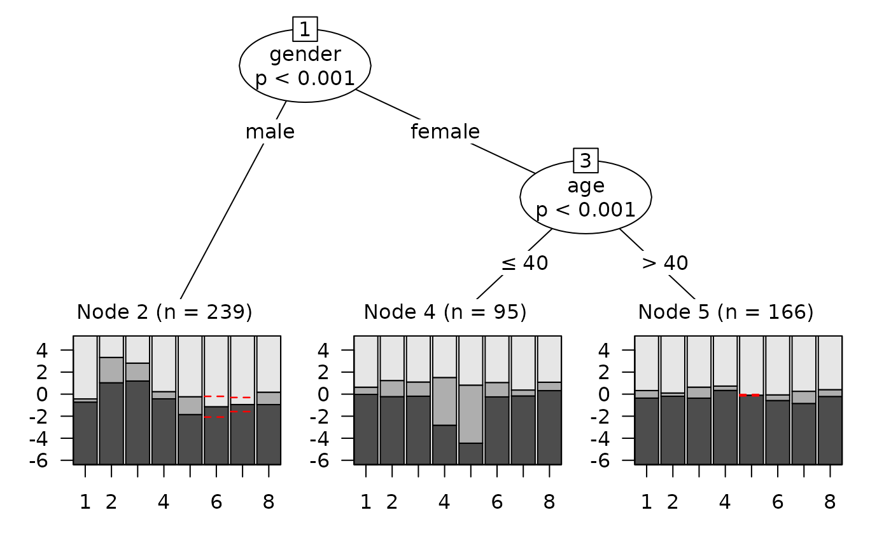

Detects differential item functioning (DIF) by splitting the sample on one
or more covariates with model-based recursive partitioning:
psychotree::raschtree() for dichotomous data (Strobl et al., 2015) or
psychotree::pctree() for polytomous data (Komboz et al., 2018). For
every split it computes an effect size per item, the Mantel-Haenszel
odds ratio on the Delta scale of the Educational Testing Service (ETS)
for dichotomous data (Holland & Thayer, 1986, Zwick, 2012, Henninger et
al., 2023), or the partial gamma coefficient for polytomous data
(Bjorner et al., 1998, Henninger et al., 2025), and classifies it as A,
B or C. Optional steps are iterative purification (Henninger et al.,
2025) and an assessment of the stability of the tree across resamples
with stablelearner::stabletree() (Philipp et al., 2018).
Usage
RMdifTree(
data,
covariates,
model = c("auto", "PCM", "RM"),
effect_size = c("auto", "MH", "pgamma"),
purification = c("iterative", "none"),
p_adj = c("fdr", "bonferroni", "none"),
thresholds = c(0.21, 0.31),
alpha = 0.05,
prune_negligible = FALSE,
stability = FALSE,
stability_B = 100L,
stability_sampler = c("subsampling", "bootstrap"),
min_n_per_level = 20L,
on_rescale = c("message", "warning", "stop"),
output = c("kable", "dataframe", "tree", "plot", "list"),
...
)Arguments
- data
A data.frame or matrix of item responses, items scored from 0. One column per item and items only. Pass the covariates in
covariates.- covariates
A data.frame with
nrow(data)rows and at least one column of DIF covariates. Columns can be numeric (continuous), factor, ordered factor or logical. Rows with a missing covariate are dropped with a message, and at least 30 rows must remain.- model
One of
"auto"(default),"PCM"or"RM"."auto"picks the Rasch model when every item is dichotomous and the partial credit model otherwise.- effect_size
One of
"auto"(default),"MH"(Mantel-Haenszel) or"pgamma"(partial gamma)."auto"uses MH with the Rasch model and partial gamma with the PCM.- purification
"iterative"(default) or"none". Iterative purification recomputes the effect size with the items already classified as DIF left out of the matching score (Bjorner et al., 1998). Henninger et al. (2025) found it matters most in short tests, where DIF items make up more of the matching score.RMdifGamma()andRMitemICCPlot()do not purify, so their results can differ from the tree's on the same data.- p_adj
Adjustment for multiple testing in the partial gamma classification:
"fdr"(default, Benjamini-Hochberg, as for the asymptotic p-values ofRMdifGamma()),"bonferroni"or"none". Without an adjustment, the chance of flagging at least one item without DIF grows with the number of items (Henninger et al., 2025). Not used for MH, which uses the ETS test directly.- thresholds
Numeric vector of length 2, the partial gamma boundaries between A and B and between B and C. Default
c(0.21, 0.31). Not used for MH, which uses the ETS boundaries 1.0 and 1.5 on the Delta scale.- alpha
Significance level of the tests in the A and C rules. Default
0.05.- prune_negligible
Logical. Prune splits in which every item is classified A. Default
FALSE.- stability
Logical. Run
stablelearner::stabletree()on the fitted tree to assess how stable the selected covariates and cutpoints are across resamples. DefaultFALSE.- stability_B
Integer. Number of resamples for the stability assessment. Default
100.- stability_sampler
"subsampling"(default) or"bootstrap". Subsampling is recommended for trees, since bootstrap resamples can lose levels of categorical covariates, which breaks the fit in small subsamples.- min_n_per_level
Integer. Smallest count allowed for a level of a factor covariate. Default
20.0turns the check off.- on_rescale
One of
"message"(default),"warning"or"stop". How to report items with no responses in their lowest category within a terminal node. psychotree rescales such items per node without saying so, which puts that node's item parameters on a different metric. The MH and partial gamma effect sizes are computed on the raw responses and are not affected. Only the item parameters shown byplot(tree)are.- output
One of
"kable"(default),"dataframe","tree","plot"or"list". See Value. For full control of the plot, useoutput = "tree"and callplot()on it with your owntp_args.- ...
Further arguments passed to
psychotree::raschtree()orpsychotree::pctree(), for exampleminsize, oralphafor the test of parameter instability. Thatalphais separate from thealphaof the classification above, and has to be passed through....
Value
By output:
"kable"A
knitr_kabletable with one row per split and item, grouped by split. The caption gives the model, the effect size, the purification and, if requested, the stability."dataframe"A data.frame with one row per split and item and the columns
NodeID,Split(a readable description of the split),Variable,Direction,Item,EffectSize,SE,Class(A, B or C),Flagged(TRUEfor B or C),n_leftandn_right."tree"The fitted partykit tree, with class
c("RMdifTree", ...)and the effect sizes intree$info$effectsize."plot"The partykit tree plotted, with item names on the x-axis of the terminal nodes (
tp_args = list(names = TRUE))."list"Both views from one fit and the analysis details:
table(the"dataframe"result),tree(the"tree"result),model("RM"or"PCM"),effect_size("MH"or"pgamma"),stability(the stability summary as a data.frame,NULLunlessstability = TRUE) andrescaled_terminal_items(a data.frame ofNodeIDandItemfor items that psychotree rescaled within a terminal node, seeon_rescale,NULLif none).
The "dataframe", "kable" and "tree" results also carry these
details as attributes (model, effect_size, stability,
stability_kable, rescaled_terminal_items), kept for compatibility.
Use output = "list" to get them without attr().
Details
Continuous covariates (for example age in years) and interactions between covariates are handled by the recursive partitioning in partykit and psychotree.
Mantel-Haenszel on the ETS Delta scale. The MH common odds ratio \(\hat{\alpha}_{MH}\) is put on the ETS Delta scale as \(\Delta_{MH} = -2.35 \log \hat{\alpha}_{MH}\). The classes (Holland & Thayer, 1986, Zwick, 2012) are:
A: \(|\Delta_{MH}| < 1\), or the test of \(\Delta_{MH} = 0\) is not rejected at
alpha.C: \(|\Delta_{MH}| \ge 1.5\), and the test of \(|\Delta_{MH}| \le 1\) is rejected at
alpha.B: otherwise.
The sign follows effecttree: a positive \(\Delta\) means the item is
more difficult for the second (reference) group.
Partial gamma. iarm::partgam_DIF() gives the estimate and SE
per item. The classes follow Bjorner et al. (1998): A if
\(|\gamma| < 0.21\) or the test of \(\gamma = 0\) is not rejected at
alpha, C if \(|\gamma| > 0.31\) and the test of
\(|\gamma| \le 0.21\) is rejected at alpha, and B otherwise.
These boundaries are conventions. The A, B and C boundaries
(Delta 1.0 and 1.5, gamma 0.21 and 0.31) come from large-scale
educational testing and are not calibrated to the sample and items at
hand, unlike the simulation-based cutoffs elsewhere in this package.
Read the classes as a rough guide to size, not as a calibrated test. For
a calibrated partial gamma DIF test, use RMdifGamma() with the result
of RMdifGammaCutoff().
Continuous covariates and interactions. The recursive
partitioning handles continuous covariates (the test of parameter
instability searches for the best cutpoint) and interactions (later
splits are conditional on earlier ones). To see how much the selected
covariates and cutpoints depend on the sample, set stability = TRUE.
Stability. With stability = TRUE, the same tree is fitted to
stability_B resamples of the data. For each covariate, the result
gives the share of resamples in which it was selected for a split, and
for continuous covariates the distribution of the cutpoints. Stability
is separate from the effect sizes. A stable split with a negligible
effect is still negligible, and a large effect on an unstable split
needs care. It takes about stability_B times as long as one fit.
Real and artificial DIF. The splits come from a joint test of
all item parameters. The effect sizes per node, however, condition on
the total score, so real DIF in one item can induce artificial DIF of
the opposite sign in the others (Hagquist & Andrich, 2017). An item can
then be classified B or C only because another item has DIF.
purification = "iterative" limits this by leaving items classified as
DIF out of the matching score (Bjorner et al., 1998).
Performance. In a simulation study of the Rasch tree, Asamoah et al. (2025) found the best detection of DIF when it was balanced and large, and lower accuracy when it was unbalanced and more items had DIF. Adding an effect size reduced the detection of negligible DIF. Detection was lowest in small samples.
Acknowledgement. The effect-size computations (MH and partial gamma per node, iterative purification, the A, B and C classes) follow the implementations by Henninger and Radek in the GitHub packages raschtreeMH and effecttree, adapted here under the MIT licence (see the header of the source file).
References
Asamoah, N. A. B., Turner, R. C., Lo, W.-J., Crawford, B. L., & Jozkowski, K. N. (2025). Impacts of DIF Item Balance and Effect Size Incorporation With the Rasch Tree. Educational and Psychological Measurement. doi:10.1177/00131644251370605
Bjorner, J. B., Kreiner, S., Ware, J. E., Damsgaard, M. T., & Bech, P. (1998). Differential item functioning in the Danish translation of the SF-36. Journal of Clinical Epidemiology, 51(11), 1189-1202. doi:10.1016/S0895-4356(98)00111-5
Hagquist, C., & Andrich, D. (2017). Recent advances in analysis of differential item functioning in health research using the Rasch model. Health and Quality of Life Outcomes, 15, 181. doi:10.1186/s12955-017-0755-0
Henninger, M., Debelak, R., & Strobl, C. (2023). A new stopping criterion for Rasch trees based on the Mantel-Haenszel effect size measure for DIF. Educational and Psychological Measurement, 83, 181-212. doi:10.1177/00131644221077135
Henninger, M., Radek, J., Sengewald, M.-A., & Strobl, C. (2025). Partial credit trees meet the partial gamma coefficient for quantifying DIF and DSF in polytomous items. Behaviormetrika, 52, 221-257. doi:10.1007/s41237-024-00252-3
Holland, P. W., & Thayer, D. T. (1986). Differential item performance and the Mantel-Haenszel procedure. ETS Research Report Series(2). doi:10.1002/j.2330-8516.1986.tb00186.x
Komboz, B., Strobl, C., & Zeileis, A. (2018). Tree-based global model tests for polytomous Rasch models. Educational and Psychological Measurement, 78(1), 128-166. doi:10.1177/0013164416664394
Philipp, M., Rusch, T., Hornik, K., & Strobl, C. (2018). Measuring the stability of results from supervised statistical learning. Journal of Computational and Graphical Statistics, 27, 685-700. doi:10.1080/10618600.2018.1473779
Strobl, C., Kopf, J., & Zeileis, A. (2015). Rasch trees: A new method for detecting differential item functioning in the Rasch model. Psychometrika, 80(2), 289-316. doi:10.1007/s11336-013-9388-3
Zwick, R. (2012). A review of ETS differential item functioning assessment procedures: Flagging rules, minimum sample size requirements, and criterion refinement. ETS Research Report Series(1). doi:10.1002/j.2333-8504.2012.tb02290.x
See also
RMdifLR() for a global test, RMdifAnchor() for anchored
tests of items, RMdifGamma(), RMdifImpact().
Examples
# \donttest{
if (requireNamespace("psychotree", quietly = TRUE) &&
requireNamespace("partykit", quietly = TRUE) &&
requireNamespace("difR", quietly = TRUE) &&
requireNamespace("iarm", quietly = TRUE)) {
data("DIFSimPC", package = "psychotree")
items <- as.data.frame(as.matrix(DIFSimPC$resp))
covs <- DIFSimPC[, c("age", "gender", "motivation")]
# Default: kable of per-split effect sizes
RMdifTree(items, covariates = covs)
# data.frame with one row per split and item
df <- RMdifTree(items, covariates = covs, output = "dataframe")
df[df$Flagged, ]
# Tree object (for plotting via partykit::plot)
tree <- RMdifTree(items, covariates = covs, output = "tree")
plot(tree)
# Stability assessment refits the tree on B resamples
# (use 100 or more in real analyses)
if (requireNamespace("stablelearner", quietly = TRUE)) {
res <- RMdifTree(items, covariates = covs,
stability = TRUE, stability_B = 25,
output = "list")
res$table # effect sizes per split and item
res$stability # selection frequency per covariate
}
}

#> Error in root.matrix(switch(vcov, opg = chol2inv(chol(meat)), info = bread, :
#> Matrix is not positive semidefinite
#> Error in root.matrix(switch(vcov, opg = chol2inv(chol(meat)), info = bread, :
#> Matrix is not positive semidefinite
#> Stability assessment notes (suppressed during fitting): 169 'minimum score not zero' rescaling warning(s); 21 'items with null categories' warning(s). These reflect sparsity in some resamples and are normal sampling variability; selection-frequency and cutpoint summaries are based on resamples that completed successfully.
#> Variable Type Selected_orig Selection_freq_pct Cutpoint_mean Cutpoint_sd
#> 1 age numeric TRUE 100 44.71053 10.39727
#> 2 gender factor TRUE 100 NA NA
#> 3 motivation ordered FALSE 4 NA NA
# }